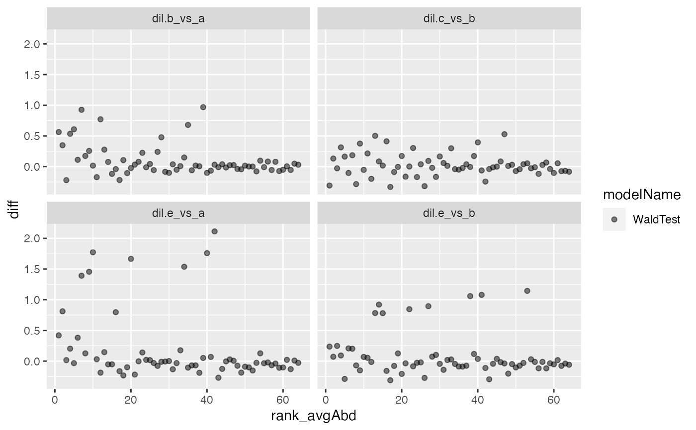
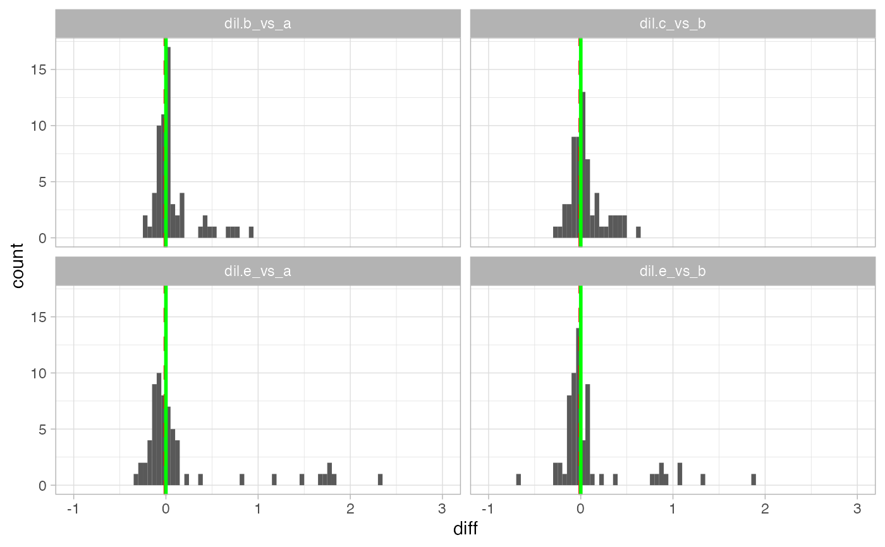
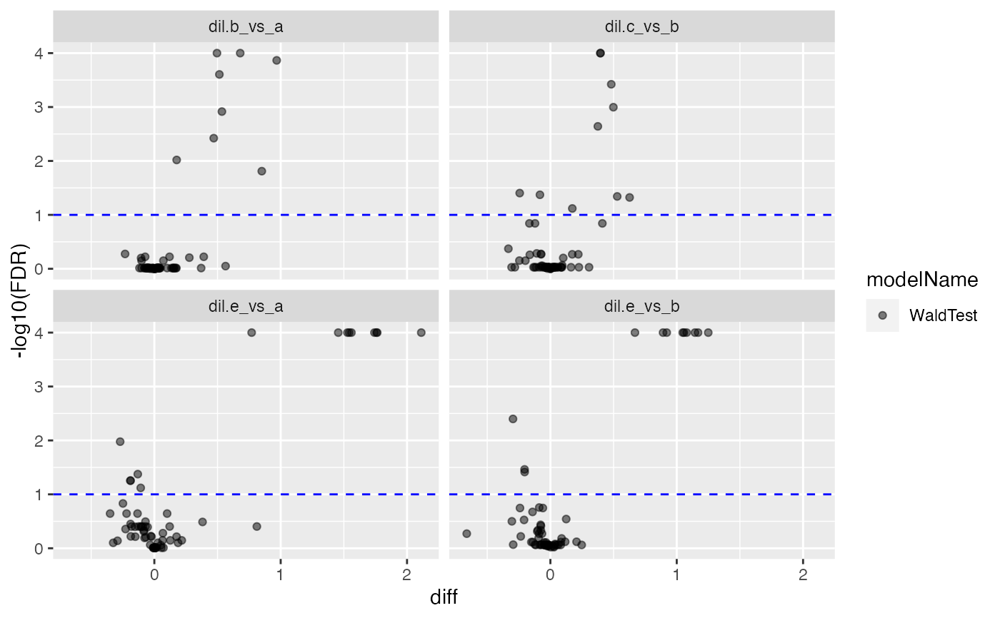
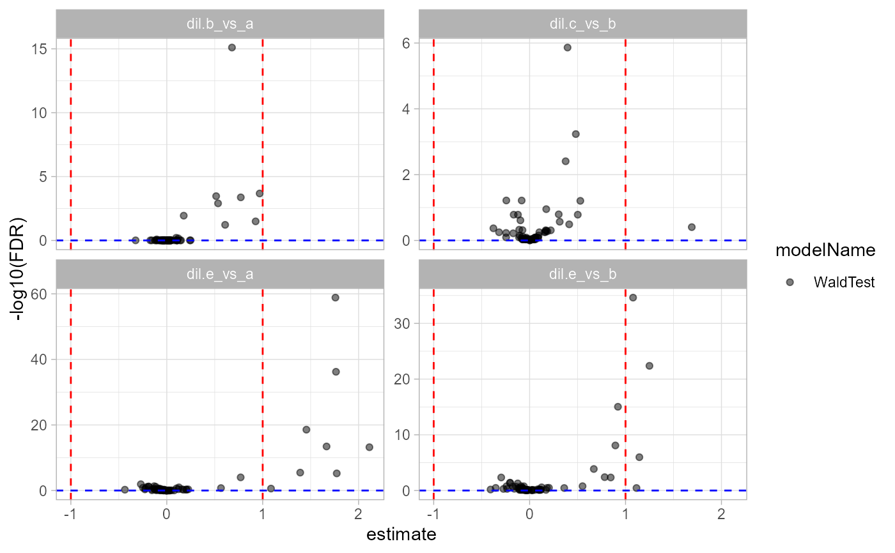

plot contrasts
plot contrasts
Other modelling:
ContrastsModerated,
ContrastsROPECA,
ContrastsSimpleImpute,
Contrasts,
INTERNAL_FUNCTIONS_BY_FAMILY,
LR_test(),
Model,
build_model(),
get_complete_model_fit(),
get_imputed_contrasts(),
get_model_coefficients(),
get_p_values_pbeta(),
isSingular_lm(),
linfct_all_possible_contrasts(),
linfct_factors_contrasts(),
linfct_from_model(),
linfct_matrix_contrasts(),
make_custom_model_glm(),
make_custom_model_lmer(),
make_custom_model_lm(),
model_analyse(),
moderated_p_limma_long(),
moderated_p_limma(),
ms_brms_model(),
ms_mcmc_checkzero(),
ms_mcmc_constrast(),
my_contest(),
my_contrast_V1(),
my_contrast_V2(),
my_contrast(),
my_glht(),
pivot_model_contrasts_2_Wide(),
plot_lmer_model_and_data_TWO(),
plot_lmer_model_and_data(),
plot_lmer_peptide_noRandom_TWO(),
plot_lmer_peptide_noRandom(),
plot_lmer_peptide_predictions(),
plot_lmer_predicted_interactions(),
summary_ROPECA_median_p.scaled()
Other plotting:
INTERNAL_FUNCTIONS_BY_FAMILY,
medpolishPlydf(),
missigness_histogram(),
missingness_per_condition_cumsum(),
missingness_per_condition(),
plot_aggregation(),
plot_hierarchies_add_quantline(),
plot_hierarchies_line_df(),
plot_hierarchies_line(),
plot_intensity_distribution_violin(),
plot_sample_correlation()
contrastDFdata frame with contrasts
modelNamename of model
subject_Idhierarchy key columns
prefixdefault Contrasts - used to generate file names
estimatecolumn with fold change estimates
contrastcolumn with contrasts names, default "contrast"
figureslist of generated figures
figures_plotlylist of generated figures
volcano_specvolcano plot specification
histogram_specplot specification
new()create Crontrast_Plotter
Contrasts_Plotter$new( contrastDF, subject_Id, volcano = list(list(score = "FDR", fc = 1)), histogram = list(list(score = "p.value", xlim = c(0, 1, 0.05)), list(score = "FDR", xlim = c(0, 1, 0.05))), modelName = "Model", estimate = "estimate", contrast = "contrast" )
contrastDFframe with contrast data
subject_Idcolumns containing subject Identifier
volcanowhich score to plot and which ablines to add.
histogramwhich scores to plot and which range (x) should be shown.
modelNamename of model
estimateestimate column
contrastcontrast column
histogram()plot histogram of selected scores (e.g. p-value, FDR, t-statistics)
Contrasts_Plotter$histogram()
histogram_estimate()plot histogram of estimated fold change
Contrasts_Plotter$histogram_estimate()
volcano()plotly volcano plots (fold change vs FDR)
Contrasts_Plotter$volcano()
volcano_plotly()plotly volcano plots
Contrasts_Plotter$volcano_plotly()
scoresfor which scores to generate volcano plot
fcfold change abline
ma_plot()ma plot
Contrasts_Plotter$ma_plot(fc = 1)
fcfold change abline
ma_plotly()ma plotly
Contrasts_Plotter$ma_plotly(fc = 1)
fcfold change abline
all_figs()generate all figures
Contrasts_Plotter$all_figs()
write_pdf()write figures in pdf format
Contrasts_Plotter$write_pdf(path, width = 10, height = 10)
pathpath
widthfigure with
heightfigure height
write_plotly()write figures into thml
Contrasts_Plotter$write_plotly(path)
pathpath
clone()The objects of this class are cloneable with this method.
Contrasts_Plotter$clone(deep = FALSE)
deepWhether to make a deep clone.
rm(list = ls()) library(prolfqua) library(tidyverse) istar <- prolfqua::ionstar$normalized() istar_data <- dplyr::filter(istar$data ,protein_Id %in% sample(protein_Id, 100)) modelName <- "Model" modelFunction <- make_custom_model_lmer("transformedIntensity ~ dilution. + (1 | peptide_Id)", model_name = modelName) pepIntensity <- istar_data config <- istar$config config$table$hkeysDepth()#> [1] "protein_Id"mod <- build_model( pepIntensity, modelFunction, modelName = modelName, subject_Id = config$table$hkeysDepth())#>#>#>#mod$get_coefficients() Contr <- c("dil.b_vs_a" = "dilution.b - dilution.a", "dil.e_vs_a" = "dilution.e - dilution.a", "dil.e_vs_b" = "dilution.e - dilution.b", "dil.c_vs_b" = "dilution.c - dilution.b" ) #Contrasts$debug("get_contrasts") contrast <- prolfqua::Contrasts$new(mod, Contr) tmp <- contrast$get_contrasts()#>#>#>#>cp <- Contrasts_Plotter$new(tmp , contrast$subject_Id, volcano = list(list(score = "FDR", fc = 1)), histogram = list(list(score = "p.value", xlim = c(0,1,0.05)), list(score = "FDR", xlim = c(0,1,0.05)))) cp$histogram()cp$histogram_estimate()#> [1] 1res#> $FDR#>#> [1] 1cp$ma_plot()cp$ma_plotly#> function(fc =1){ #> # html version #> contrastDF <- self$contrastDF #> if (!is.null(contrastDF$c1) && !is.null(contrastDF$c2)) { #> #> contrastDF <- contrastDF %>% #> plotly::highlight_key(~subject_Id) #> fig_plotly <- private$.ma_plot(contrastDF, self$contrast, fc = fc) %>% #> plotly::ggplotly(tooltip = "subject_Id") #> #> self$figures_plotly[["ma_plot"]] <- #> list(fig = fig_plotly, #> name = paste0(self$prefix, "_MA_Plolty_", self$modelName)) #> return(fig_plotly) #> #> }else{ #> return(NULL) #> } #> } #> <environment: 0x000000003dbeaa60>if(FALSE){ cp$write_pdf("c:/Temp") cp$write_plotly("c:/Temp") }